Corail VU
Corail à couloir latéral
Chaudron normal et chaudron Super Large
Effectifs et diagrammes
Diagrammes apparus par déclassements et transformations
Quelques données techniques
Constructeurs : ANF, De Dietrich, Carel-Fouché
Vitesse maximum autorisée : 160/200 km/h
Alimentation des auxiliaires : 1500V cc, 1500V 50 Hz (voitures de service intérieur), également 3000V cc, 1000V 16,7 Hz (Voitures RIC)
Longueur : 26,400 m
Masse : 40 à 46t
Pour plus d'info:
Le fiche Voiture Corail
sur Wikipedia.
Les Corail sur Trains-Europe.
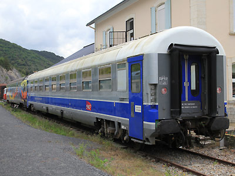
Proto VU ex-A9u "UIC Longue" reconvertie en voiture de l'Agence d'Essais Ferroviaires n°99-90 223 à portes Kiekert (Axat, le 23/05/2015)
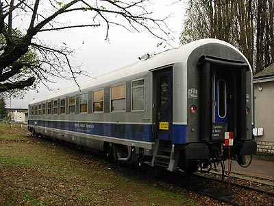
Proto VU ex-B11u "UIC Longue" n°99-97 233 (St Pierre des Corps, 10/11/2002)
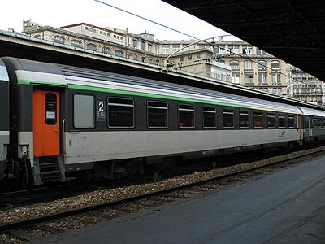
A4B6u en livrée d'origine et sigle Desgrippes (Paris-Est, 03/07/2003)
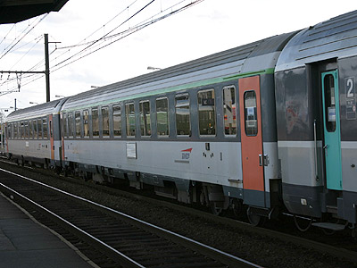
Rare B11u à portes louvoyantes coulissantes, la 21-71 242 de Bordeaux,
depuis repeinte en TER Aquitaine (Morcenx, 28/03/2005)

Autre B11u PLC, la 21-72 118 Corail Nouvelle Déco, sigles Intercités et Carmillon au départ pour Bordeaux (Clermont-Ferrand, 22/05/2011)
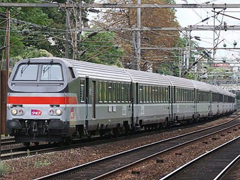
Cette B6Dux VU75 fonctionne encore pour peu de temps en réversibilité par câblots avec une BB 16000 (La Garenne-Colombes, 07/09/2008)
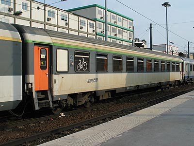
B9ux VU 75 ex-A11u engagée sur un TER Picardie (Paris-Nord, 24/04/2003)
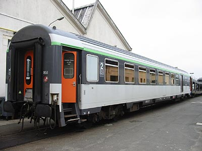
L'une des dix B5Dd2ux modifiée pour les trains de pèlerins.
61 87 82-70 509-8 de Lourdes (Villeneuve-Prairie, 08/12/2002)
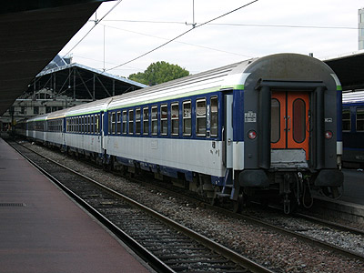
B10c10ux à sigle Corail mais en attente du logo Carmillon (Paris-Est, 26/09/2004)
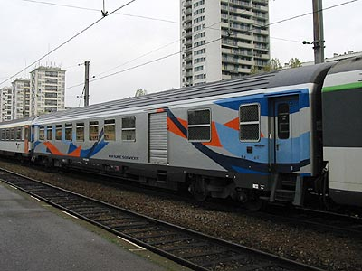
B6Dd2u 61 87 82-70 310-1 en livrée Océane engagée en renfort
sur une relation Aqualys (Orléans, 09/11/2002)
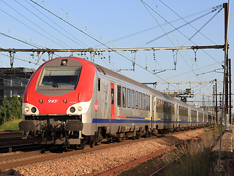
B5uxh TER Bourgogne, issue d'une B6Du transformée
(Maisons-Alfort, 17/06/2012)
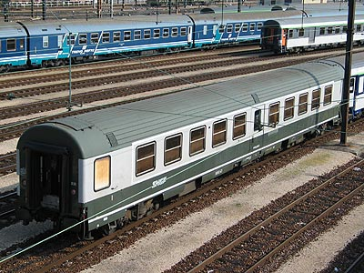
Voiture Ambulance So, livrée d'origine et sigle Tallon
(Villeneuve-Prairie, 11/04/2003)
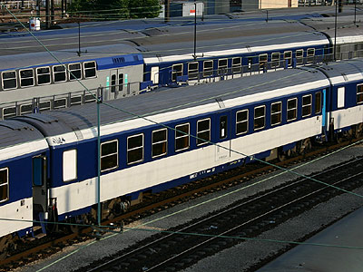
Voiture Ambulance So rénovée (Villeneuve-Prairie, 04/09/2005)